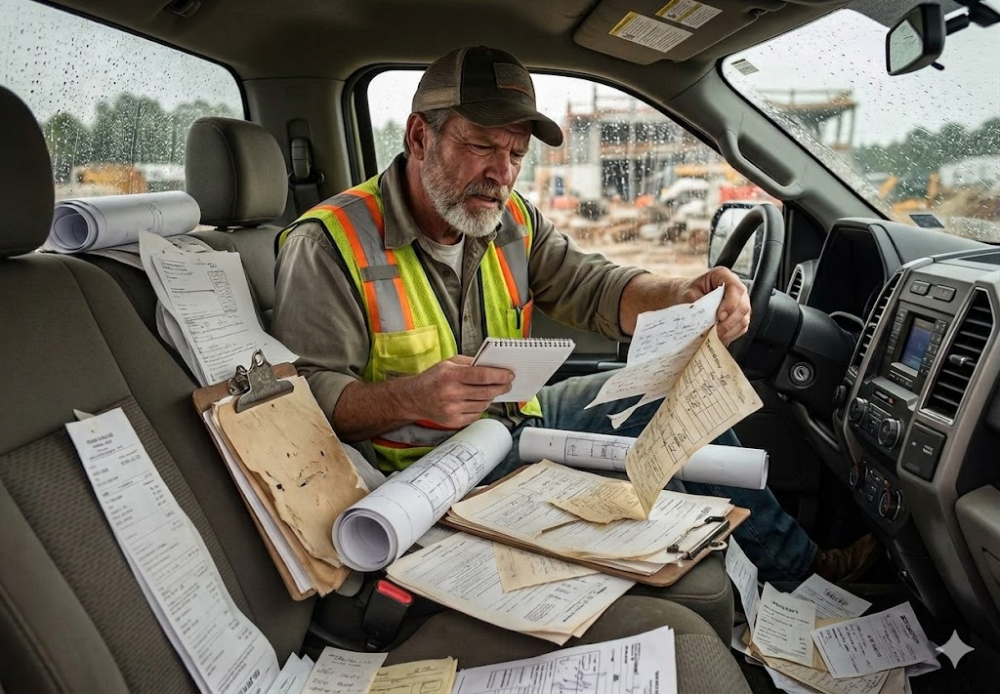

Duplicate piece work contracts created by mistake
Same job, multiple versions. No single source of truth.
Construction Operations Platform for Residential Trade Contractors
JobRhythm is built for US residential trade contractors: one system for operations and cash, so you bill with a clear trail (what, how much, and for which job) while crews, contracts, and the field share the same information.
Fast onboarding • No credit card required • Built for real field operations

The real operational problem

Field reality
Residential trade contractors run on tight margins, and on top of that, they carry the stress of chasing unpaid invoices. It’s not a myth: when crew scheduling, piece work contracts, inventory, and accounts receivable live scattered across notes and loose sheets, visibility drops, money gets left on the table, and pressure spikes.
Industry research also shows many contractors lose between 15% and 25% of the money they could earn due to operational mistakes: duplicate data, misplaced materials, rework, and gaps between planning and execution. The root cause is rarely workload; it’s disconnected operations.
That mix of tight margins, anxiety about getting paid on time, and silent money leakage is the real problem JobRhythm is built to solve.
Same job, multiple versions. No single source of truth.
Stock goes out, but nobody knows where or which job.
You can’t connect what left the yard to what was billed.
Just to know what materials are missing and where.
Assignments and addresses scattered across tools and memory.
No link to the job or the schedule.
The problem isn’t workload: it’s disconnected operations. Without a single source of truth, you lose money on calls, materials, and rework, and you carry the stress of not getting paid on time. JobRhythm connects scheduling, contracts, materials and billing in one workflow so you recover margin and peace of mind.
Connect operations and finance
Connect operations and finance. JobRhythm brings together crew scheduling, piece work contracts, material prep, job-site communication, and tracking every invoice in one flow. From planning through getting each house paid, you know what was done, what was delivered, and what you should bill, so you stop funding coordination failures with your own margin.
Reduce operational stress. Construction is one of the most stressful industries; when everything lives in one platform, you stop flying blind. You’re not chasing payments or guessing who’s where: the information is there, and your team can breathe. You see what was delivered, what was billed, and what’s still outstanding, and your heart thanks you for it.
Operations and finance, without guesswork. Fewer runarounds, fewer materials sent the wrong way, and clear control of every job. You decide from data already in the system, not guesses or what someone “remembers.” You follow the flow schedule → materials → collections → profit, with margin you can trace per house and less money lost to improvisation.

Transformation you see in the margin
Coordinate crews, communities, and jobs with full visibility. Assign work, see who’s where, and keep the week aligned without chasing updates.
Create and track piece work contracts in one place. Fewer duplicates, less manual rework, and a clear link between jobs and payments.
Track materials, costs, and warehouse movements in one place. Know what’s in stock, what left the yard, and which job it’s tied to.
Centralize job notes, photos, and team conversations. Information stays with the job and the piece work contract, not buried in phones or chat apps.
See crews, materials, and jobs in real time, and bring profit per house into your weekly rhythm. Fewer surprises and decisions you can explain to the team and the books.
Answer two questions in one place: What does this truck have? and What equipment does this crew have? . In the field, tools live in a truck, and each truck is assigned to a crew for specific time periods; now you see both views in one system.
One system. One source of truth. Job numbers you can defend.
See how it works in practice: explore the features below or book a demo and walk your workflow before the next job kicks off.
Operational flow
From scheduling crews to packing materials and tracking the job in the field, JobRhythm keeps every part of the operation moving in rhythm.
Assign rough, trim, slab, and other field jobs to the right crews using a clear weekly schedule built for residential construction operations.
Set the job scope, pricing, and extra options in a Piece Work Contract so every crew and subcontractor knows exactly what the work includes.
Generate material lists for each house or project using reusable favorites and templates, so the warehouse or field team can prepare the correct package faster.
Keep all field communication in one place with photos, notes, and updates connected directly to the job, instead of scattered messages and phone calls.
Use dashboards and operational metrics to monitor progress, inventory movement, contract totals, and business performance across your jobs and crews.
Assign rough, trim, slab, and other field jobs to the right crews using a clear weekly schedule built for residential construction operations.
Set the job scope, pricing, and extra options in a Piece Work Contract so every crew and subcontractor knows exactly what the work includes.
Generate material lists for each house or project using reusable favorites and templates, so the warehouse or field team can prepare the correct package faster.
Keep all field communication in one place with photos, notes, and updates connected directly to the job, instead of scattered messages and phone calls.
Use dashboards and operational metrics to monitor progress, inventory movement, contract totals, and business performance across your jobs and crews.
See how JobRhythm fits your operation
Book a demoKey Features
Everything your field and office need to run residential construction operations from one platform.
Weekly schedule, work orders, material movement, and job accounts—field and office on the same beat.
Products, warehouses, transfers, and dashboards for rough, trim, and typical residential phases.
Production pricing and contracts—what crews get paid to install—tied to each house and builder.
Builders, parties, and master categories that feed contracts and reporting without mixing piece work.
Crews, trucks, and assignments: who rolls to each job and with which vehicle.
Community maps and lots where scheduling, materials, and piece work meet.
Built for Residential Trade Contractors
JobRhythm is designed for residential contractors, field supervisors, operations managers, and crew-based teams that need better visibility across schedules, crews, piece work contracts, inventory, and job communication.
See crew assignments, work orders, and scheduling priorities in one place.
Reduce missed updates between office planning and field execution.
Keep schedules, piece work contracts, materials, and notes aligned across the operation.
About the Experts
For over 8 years, our team has worked directly inside residential construction operations, helping coordinate crews, schedules, materials, contracts, field communication, and project delivery.
More than 4,000 residential projects delivered across Florida.
We didn't create JobRhythm from a boardroom.
We created it from real-world experience dealing with the daily friction that slows residential contractors down.
Every feature inside JobRhythm was designed to solve problems we personally experienced in the field.
Today, JobRhythm helps construction companies bring their scheduling, communication, documentation, contracts, and operational workflows into a single platform.
Problems we lived in the field
Before you decide
Absolutely.
Whether you manage 3 employees or 100+, JobRhythm scales with your operation.
The platform was designed specifically for residential contractors who need better visibility, coordination, and accountability.
That’s exactly why we built it.
Most supervisors, installers, and field crews start using JobRhythm with little to no training.
The interface is simple, mobile-friendly, and designed for real construction professionals, not software engineers.
Most contractors do.
The problem is that spreadsheets don’t communicate with crews, track job progress, centralize photos, or provide real-time visibility.
JobRhythm eliminates disconnected information and gives everyone access to the same source of truth.
We handle the onboarding process with you.
Our team helps configure the system, answer questions, and guide your company during implementation.
You won’t be left alone trying to figure things out.
Once supervisors realize they can access schedules, photos, notes, contracts, and crew communication from one place, adoption happens naturally.
People use tools that make their jobs easier.
Testimonials
Carlos Luna
★★★★★
“JobRhythm is easy to use and makes daily coordination much simpler. Everything is organized and available when I need it.”
Mike Jordan
★★★★★
“House chat and notes completely changed how I communicate with the team. Important information no longer gets lost.”
Pablo Valencia
★★★★★
“The scheduling system gave our company a quantum leap in coordination. Everyone knows where they need to be and when.”
Oliver Hernandez
★★★★★
“Piece work contracts provide accurate information for crew payments. Transparency and accountability improved.”
Santiago Valencia
★★★★★
“I can upload photos and PDF blueprints, document progress, share notes, and coordinate personnel from the field.”
First month free
Full access, onboarding, and support for the first month. 30-day risk-free guarantee: cancel before the trial ends.
Bonuses included
Your payment is processed securely through Stripe.
We accept


Processed securely by

All transactions are protected using modern encryption and security standards.
FAQ
Most companies are operational within a few days.
Yes. JobRhythm is designed to work on phones, tablets, and desktop computers.
No. JobRhythm runs directly from your web browser.
Yes. Supervisors and crew members can upload photos, document progress, and share notes in real time.
Yes. Data is protected through encrypted connections and secure infrastructure.
Book a demo or create your free account. No credit card required. See how JobRhythm fits your workflow.